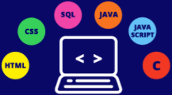

Programming
About Programming
Programming is essentially writing a collection of instructions that a computer can follow to perform a task. Programs are quite literally the structure of everything online, all computers, phones, any electronics you can think of.
Programming Languages
There are many different programming languages. A language is basically the way you write programs, and it can vary depending on the type of program you are writing, or sometimes it's just personal preference. Languages make programming lightyears easier, otherwise people would be typing 0s and 1s for a long, long time. One of the most common languages is Python, which is a multi-purpose language developed by Guido van Rossum. During developement, he was reading scripts from Monty Python's Flying Circus, which is where the name Python came from. The overall most common language is JavaScript, being used by almost 70% of all developers.
Best Platforms to Develop With
There are many different programming platforms, all with their own special features. One of the best platforms for all-purpose programming is Visual Studio. A Microsoft platform, Visual Studio supports helpful features for almost all languages of code, plus a plethora of user-created addons, if you need some additional support. Visual Studio along with Visual Studio Code is definitely one of the most reliable and overall most useful platforms to develop most anything you want. Some other well-known and useful code editors are Atom and Sublime.
How to Be Productive

When programming, sometimes motivation can be a problem. Especially when you come upon an issue that you've tried to solve a million times. These daunting tasks can derail the entire project. What I like to do is just take a short break, get my mind together, and then get help from the internet. Some of the best places to look for really any questions is Stack Overflow, I've consistently found answers for almost any projects, it's really the best place to look. If nothing pans out, you might just want to take a step back and think about alternate ways to acheive your goal. That brings me to another tip. If you aren't motivated enough to finish, setting goals is one way to stay efficient. Sometimes you might just want to take a break for a little while, sometimes things can get very overwhelming very fast. Sometimes it's better to just go step by step, rather than looking at the big picture.
Click here for a fun little project I made with my extra time